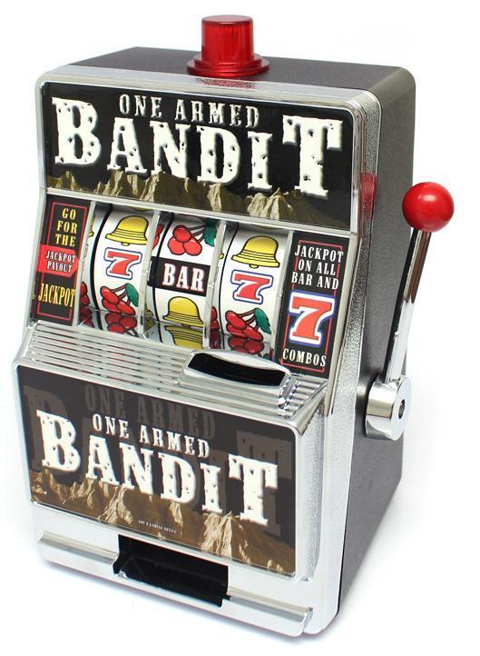
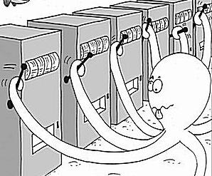

from IPython.core.display import HTML, Markdown, display
import numpy.random as npr
import numpy as np
import pandas as pd
import seaborn as sns
import matplotlib.pyplot as plt
import scipy.stats as stats
import statsmodels.formula.api as smf
import pingouin as pg
import ipywidgets as widgets
from rl_exp import *
# Enable plots inside the Jupyter Notebook
%matplotlib inline
Lab: Reinforcement Learning#
Authored by Todd Gureckis and Hillary Raab Aspects borrowed from Computational Cognitive Modeling graduate course.
Learning and Deciding in an Unknown World#
This class will cover the basics of reinforcement learning. Reinforcement learning is a branch of artificial intelligence focused on how to develop agents (think robots!) that learn and adapt to their environment. Programming a robot is hard, so many people think the best idea it let the robot learn by itself what is good and bad behaviors (just like a human child!). Although reinforcement learning is an important branch of artificial intellgience research and computer science, it is also a very large and rich field within psychology and neuroscience. The reason is that, like robots, much of our behavior is shaped by the contingencies of reward in our environment. If you don’t believe me consider this – did it ever cross your mind to raise your hand in class to ask a question because you thought you might get participation points? If so you might have been trying to change your behavior to maximize your reward (good grades). Once you take this perspective you realize that much of what we do is designed to maximize the gains we receive while avoiding negative outcomes and punishment. Thus, we have more in common with these reinforcement learning robots than it might seem!
Reinforcement learning, as the name suggests, uses algorithms to model how we learn from positive and negative outcomes (rewards and punishments). When something is good, we tend to repeat our actions. Think of your favorite lunch spot (mine is Thelewala on Macdougle Street!). I tend to frequent this restaurant because it has a positive value to me. When something is bad, you tend to choose that option less often. In this way, humans can learn the value of their actions (e.g., which lunch spot to go to) based on rewards and punishments.
Think back to when you were a freshman. There are so many different lunch options in the Washington Sq. Park area. So how do you decide where to buy lunch when you started at NYU? Maybe you have preconceived notions of what types of food you like. But for this example, let’s pretend you like every type of food, and it’s just a matter of where to go. You have to learn the value of all the different restaurant options. The value can range from 1 (amazing!) to -1 (terrible). Anything positive is rewarding and anything negative is perceived as a punishment. Perhaps all restaurants start of with a value of 0 since you don’t know anything about them. After you visit a restaurant, you will update the value of that restaurant (i.e., learning). Maybe you went to restaurant “A” a few times. The first time it was great, the second time it was bad, and the third time it was excellent. The value of the restaurant changes with these experiences. The value would go up after your first visit, down a little after your second, and up again after your third. The goal of learning in this context is to figure out which things are good and which are bad based on our experience.
But how can we study this?
Can you think of any other examples in your life that might be similar to this "reinforcement learning" problem?
The multi-armed “bandit”#
The behavior we just described (finding the best restaurants) is a fairly complex task and influenced by a number of things we can’t control like advertising. However, both psychologists and computer scientists have developed a very simple learning task which can be used to study reinforcement learning. This task tries to capture much of the features of choosing something like restaurants but in a more simplistic and easy to analyze fashion.
This learning problem is known as the n-armed bandit. N-armed bandits are optimization problems that mimic many real-world problems faced by humans, organizations, and machine learning agents. The term “bandit” comes from the name of the casino games where you pull a lever to enter a lottery. The bandits have one arm (the arm you pull down) and they steal your money (see below).

An N-armed bandit is a problem where a decision maker is presented with a bandit with $n$ arms instead of just one (see Octopus cartoon). The task for the agent is, on each trial or moment in time, to choose bandits that are good while avoiding those that are less good. Since nothing may be known about the bandits a-priori, the problem is difficult and requires a balance of exploration (trying new things in order to learn) and exploitation (choosing options known to be good). Just like choosing a restaurant!

If each bandit paid out a fixed amount every time it was selected, then the problem would be solved with very simple exhaustive search process (visit each bandit once and then select the best one for the remaining time). However, the sequential search strategy just described doesn’t capture the opportunity cost of exploration. For example, imagine that there is 100 armed bandits. Further assume that you know that 98 give zero reward, one gives a reward of 10, and one gives a reward of 20. If on the first pull you receive 10 units of reward then you are lucky and landed on a good one. However, is it worth going searching for the 20 point bandit? Given that you will have to pull a lot of zero reward bandits, it might actually be more rewarding over a finite period to continue to pull the 10 point bandit arm. Thus, exploration and exploitation act more like a tradeoff depending on the structure of the problem.
In addition, when the reward received from each bandit is probabilistic or stochastic, and furthermore the quality of the bandits might change over time, the problem becomes much more difficult. These cases require the agent to learn from the past but also be willing to adjust their beliefs based on more recent information.
Bandit tasks come up in many areas of cognitive science and machine learning. For example, there is a way to view A/B testing on websites as a particular type of bandit problem (your goal is to ensure conversions or purchases on your website, and your bandit arms are the different web designs you might try out). Similarly, the very real human problem of deciding where to eat lunch is a bit like a bandit problem – should you return to your favorite restuarant or try a new one? Is the exploration worth giving up a reliably good meal?
In this lab you will begin by running yourself in a simple $n$-armed bandit experiment to see how you approach the task. Then we will attempt to model our data using some simple reinforcement learning models.
Run in our experiment!#
subject_number = 'XXX' # set your subject number here
exp = RL_Experiment(subject_number)
exp.start_experiment()
Problem 1
Write a short summary, in words, of the strategy that you used? Did you notice anything about the task? How do you think the rewards were generated?
Problem 2
Using your own data (see above) inspect the dataframe. What do you think the columns mean? Write a short markdown cell which summarizes it for you for future reference.
Problem 3
Make a plot of the reward values from each arm of the bandit over time. These are stored in the columns called 'reward0' and so on.
Problem 4
Make a plot of the best resp for each trial of the task.
Problem 5
Make a plot showing if you choose the reward "maximizing" column on each trial of the experiment. This a 0/1 column labeled 'max'. You could also create this column by checking if the chosen option (choice) is the maximum of the reward0, reward1, etc.. columns (they should be about the same).
The plot you made in the previous analysis is probably hard to visualize because it jumps from 0 to 1 from on trial to the next. A common way to deal with time series data is to “smooth” it. Smoothing is accomplished by averaging together nearby points in time. Depending on how many you choose to average from it can create a much smoother time series. The Pandas library actually provides quite a lot of time series smoothing functions since it was originally developed by a person working with financial data (e.g., prices of assets like stocks). Here is a long and comprehensive guide to these features. One useful function is the .rolling() function (see docs here). This function can be applied together with mean to make a rolling average of a column like this:
df['columnname'].rolling(window=20).mean()
This command shows that the window should be of “width” 20 (meaning averaging together the past 20 trials). And the mean function lets us commute the arithmatic mean. Rolling is a bit like group by then except instead of explicitly grouping by one column it creates sub groups organized in overlapping windows to nearby trials.
Problem 6
Create a "smooth" version of the plots you made in the previous step. Adjust the window until you feel you can see the main trends in the data. What can you see? What do you know now about the design of the experiment?